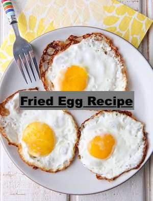

The Ultimate Fried Egg Tutorial

Description
Cooking the perfect sunny side up egg is quite easy. There is only 3 ingredients necessary and one very hot pan preferrably a cast iron.
Ingredients
- Olive oil or preferred cooking oil
- Whole raw egg
- Salt and pepper for taste
Cooking Method
- The cooking method is very simple. Heat the cast iron pan until it is smoking.
- Carefully crack your raw egg and let the contents fall into the pan without spilling the oil.
- The key to having perfect fried eggs is to not move or touch the egg until the outer edges are browned. This creates a layer of crispy goodness allowing you to flip the egg (optional) for hard side up.
- After several minutes of cooking; the egg should move freely without sticking to the pan. Add salt and pepper to taste and enjoy!
RETURN HOME
BACK TO RECIPES